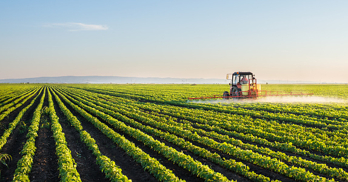
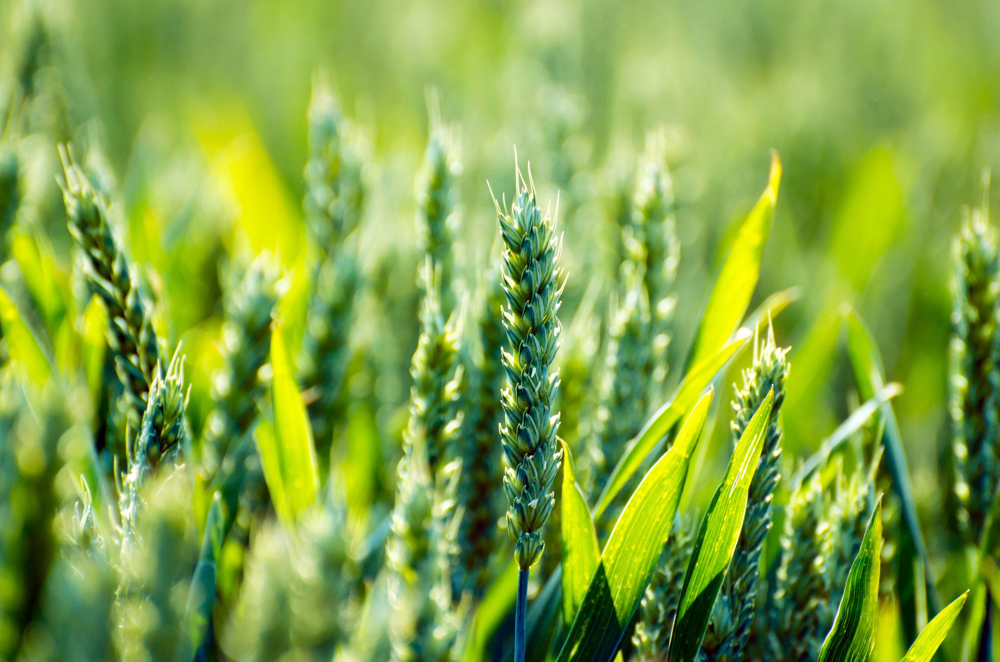
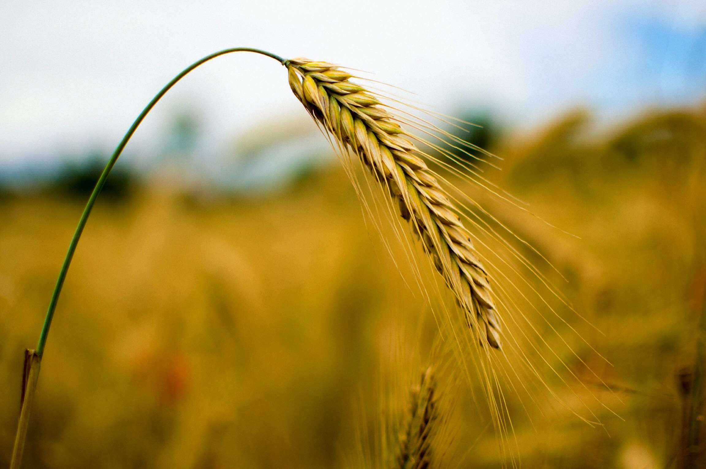

Data-Backed Accuracy
Recommendations are grounded in real soil chemical balances and climate patterns rather than historical intuition.
AgriSense recommends the ideal crop for your specific field using soil chemical nutrients (N, P, K), temperature, humidity, rainfall, and pH — eliminating uncertainty in farming decisions.

Maximizing Crop Yields: Data-driven soil analysis for sustainable, profitable farming.
A specialized precision advisory platform built to give farmers, field researchers, and agronomy students a confident, data-backed roadmap before investing capital into seeds.
Recommendations are grounded in real soil chemical balances and climate patterns rather than historical intuition.
Input your parameters and receive immediate crop suggestions tuned for maximum seasonal suitability and yield.
Clean, accessible interface formatted clearly for farmers, field extension agents, and agricultural enthusiasts.
Avoid planting crops ill-fitted to your local rainfall or soil pH, saving water and expensive fertilizer expenditure.
Three simple steps stand between your field test readings and a high-confidence planting decision.
 Step 01
Step 01
Enter your Nitrogen, Phosphorus, and Potassium levels along with temperature, humidity, pH, and average rainfall.

Step 02Our trained Decision Tree classifier evaluates your soil profile against thousands of validated historical crop records.

Step 03Receive your optimal recommended crop profile along with confidence markers to plan your upcoming farming season.
Learn how key soil parameters affect crop matching and soil vitality.